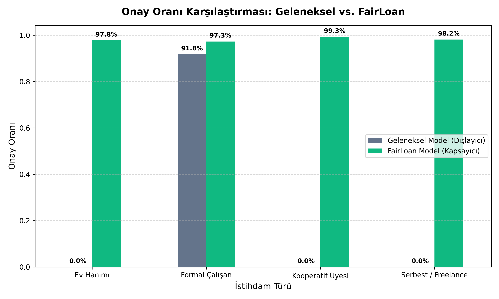

Aşağıdaki grafik, model eğitimimiz sırasında 2,000 kişilik sentetik veri seti üzerinden otomatik olarak türetilmiştir. Geleneksel sistemde özellikle "ev hanımı" ve "serbest çalışan" grupları neredeyse tamamen finansal sistemin dışına itilirken, FairLoan ML alternatif verilerle adil ve dengeli bir onay dağılımı sağlar.

Metodoloji: Makine öğrenmesi pipeline'ımız, geleneksel cinsiyet önyargısı içeren gelir ve unvan değişkenlerini tamamen yok sayarak çalışır. Bunun yerine, finansal sorumluğu temsil eden 5 alternatif sütunu girdi olarak kabul eder. Bu sayede mikro-üretim yapan kadınların kredi sistemi içerisine adilce dahil edilmesi sağlanmıştır.